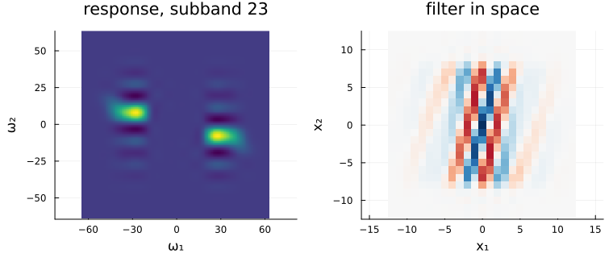
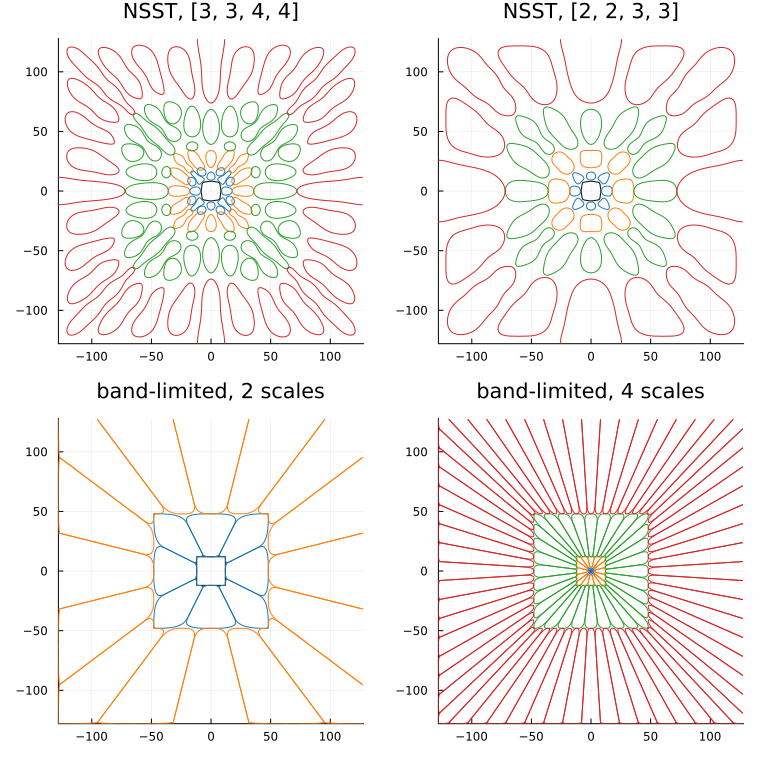

Inspect responses and choose parameters
Each subband of a shearlet transform is the data filtered by one filter: first a lowpass, then, scale by scale from coarse to fine, one filter per direction. This page shows how to look at these filters and how the parameters of each system set their number and shape.
Count the subbands
nsubbands(system, size(x)) is the number of subbands. Every subband has the size of the input, so the coefficients take that many times the memory of the data. In 2-D:
BandlimitedShearlets(scales = J)has2^(J+2) - 3subbands.scales = 0(the default) picksJ = ⌊log₂(min(size(x))) / 2⌋.NSSTShearlets(direction_levels = [d₁, …, d_J])has1 + Σ 2^dⱼsubbands,dⱼ ≥ 2; the default[3, 3, 4, 4]gives 49.CompactShearlets(shear_levels = [d₁, …, d_J])has1 + Σ 2(2^(dⱼ+1) + 1)subbands; the default for 4 scales is[1, 1, 2, 2], which gives 57.
dims = (256, 256)
[
"BandlimitedShearlets()" => nsubbands(BandlimitedShearlets(), dims),
"BandlimitedShearlets(scales = 3)" => nsubbands(BandlimitedShearlets(scales = 3), dims),
"NSSTShearlets()" => nsubbands(NSSTShearlets(), dims),
"NSSTShearlets(direction_levels = [2, 3, 3])" => nsubbands(NSSTShearlets(direction_levels = [2, 3, 3]), dims),
"CompactShearlets()" => nsubbands(CompactShearlets(), dims),
"CompactShearlets(scales = 3)" => nsubbands(CompactShearlets(scales = 3), dims),
]6-element Vector{Pair{String, Int64}}:
"BandlimitedShearlets()" => 61
"BandlimitedShearlets(scales = 3)" => 29
"NSSTShearlets()" => 49
"NSSTShearlets(direction_levels = [2, 3, 3])" => 21
"CompactShearlets()" => 57
"CompactShearlets(scales = 3)" => 39Look at one filter
shearlet_spectra(system, dims) returns the frequency responses of all filters on the DFT grid of a dims array: an array of size (dims..., n), in the order of subband_layout(system, dims), with ω = 0 at index 1 as fft returns it. Subband i of x is real(ifft(spectra[:, :, i] .* fft(x))), so the inverse FFT of a response is the filter in space.
To find a subband, compare the layout with a ShearletIndex: scale j (0 is the lowpass), cone c (the axis along which the subband's frequencies are largest) and shear k (the direction within the cone).
n = 128
sys = NSSTShearlets()
L = subband_layout(sys, (n, n))
Ψ = shearlet_spectra(sys, (n, n))
i = findfirst(==(ShearletIndex(scale = 3, cone = 1, shear = (1,))), L)
ψ = centered(real(ifft(Ψ[:, :, i])))
m = n ÷ 2 + 1; w = 12
plot(heatmap(bins(n), bins(n), centered(Ψ[:, :, i]); color = :viridis, aspect_ratio = :equal,
title = "response, subband $i", xlabel = "ω₁", ylabel = "ω₂"),
heatmap(-w:w, -w:w, ψ[(m - w):(m + w), (m - w):(m + w)]; color = :RdBu,
clims = (-1, 1) .* maximum(abs, ψ), aspect_ratio = :equal, title = "filter in space",
xlabel = "x₁", ylabel = "x₂");
layout = (1, 2), size = (760, 330), colorbar = false)
See how a parameter changes the tiling
The half-maximum contour of each squared response shows the frequencies that subband covers. Below, the default NSST next to one with fewer directions per level, and band-limited systems with 2 and 4 scales (the color is the scale, black the lowpass):
function contours(sys, n; kw...)
L = subband_layout(sys, (n, n)); Ψ = shearlet_spectra(sys, (n, n))
p = plot(; aspect_ratio = :equal, legend = false, xlims = (-n / 2, n / 2), ylims = (-n / 2, n / 2), kw...)
for (i, l) in enumerate(L)
A = centered(Ψ[:, :, i] .^ 2)
contour!(p, bins(n), bins(n), A ./ maximum(A); levels = [0.5], colorbar = false,
color = islowpass(l) ? :black : palette(:tab10)[l.scale])
end
return p
end
plot(contours(NSSTShearlets(), 256; title = "NSST, [3, 3, 4, 4]"),
contours(NSSTShearlets(direction_levels = [2, 2, 3, 3]), 256; title = "NSST, [2, 2, 3, 3]"),
contours(BandlimitedShearlets(scales = 2), 256; title = "band-limited, 2 scales"),
contours(BandlimitedShearlets(scales = 4), 256; title = "band-limited, 4 scales");
layout = (2, 2), size = (760, 760))
Check reconstruction and frame bounds
With synthesis = true, shearlet_spectra returns the responses the inverse applies. The products of analysis and synthesis responses sum to one at every frequency, which is why synthesize inverts analyze. The sum of the squared analysis responses gives the frame bounds: its minimum and maximum over the grid. It is 1 everywhere for BandlimitedShearlets (a Parseval frame, whose inverse is its adjoint) and varies for the other two:
for sys in (BandlimitedShearlets(scales = 3), NSSTShearlets(), CompactShearlets())
A = shearlet_spectra(sys, (128, 128))
S = shearlet_spectra(sys, (128, 128); synthesis = true)
recon = maximum(abs, sum(A .* S; dims = 3) .- 1)
lo, hi = extrema(sum(abs2, A; dims = 3))
println(rpad(nameof(typeof(sys)), 22), "max |Σ AᵢSᵢ − 1| = ", round(recon; sigdigits = 2),
", Σ Aᵢ² in [", round(lo; digits = 3), ", ", round(hi; digits = 3), "]")
endBandlimitedShearlets max |Σ AᵢSᵢ − 1| = 8.7e-15, Σ Aᵢ² in [1.0, 1.0]
NSSTShearlets max |Σ AᵢSᵢ − 1| = 2.4e-15, Σ Aᵢ² in [0.25, 1.383]
CompactShearlets max |Σ AᵢSᵢ − 1| = 1.0e-15, Σ Aᵢ² in [0.133, 3.978]Choose the parameters
- Number of scales. Each scale splits off a band of frequencies; the lowpass is what is below the coarsest one. Add scales when the coarse structures should be split by direction too; fewer scales keep a larger lowpass and fewer subbands.
BandlimitedShearletsandCompactShearletstakescales; forNSSTShearletsit islength(direction_levels). - Number of directions. In
BandlimitedShearletsit is fixed by the scale: scalejhas2^(j-1)shears on each side of each cone,4·2^(j-1)subbands in 2-D.alphachanges this rule:alpha = 2keeps one shear per side at every scale, smaller values add directions faster.NSSTShearletstakes2^dⱼdirections per scale fromdirection_levels, andCompactShearletstakes2^(dⱼ+1) + 1shears per cone fromshear_levels. More directions give narrower wedges, which separate edge directions better, at the cost of more subbands. - Filter length.
NSSTShearlets(filter_size = L)sets the side of the spatial direction filters. Larger filters separate directions better at coarse scales; smaller ones are more local in space.0uses the filters' frequency responses on the full grid, the sharpest choice. - Which system. The explanation compares the frame type, localization and dimensions of the three systems.